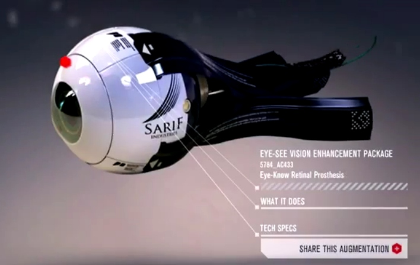

Prothèses
Prothèses nouvelles génération
Grâce à l'évolution de la technologie on est maintenant capable de créer des prothèses intelligentes. Celles-ci sont dotées de capteurs permettant de surveiller le patient en permanence et de transmettre des informations aux médecins sur son état de santé. De sorte à améliorer ses traitements médicaux et réduire au minimum le recours à des interventions chirurgicales.
Les nouvelle prothèses sont aussi capable d'analyser les mouvements de son utilisateur pour pouvoir s'adapter au mieux. Pour permettre cela les prothèses contiennent des capteurs, des moteurs et un calculateur intégré, qui en fonction du mouvements vont corriger la posture, et aider à réaliser ce mouvement en bougeant de façon active.
Ces prothèses intelligentes sont de plus en plus commercialisées et perfectionnées. Le plus perfectionné de nos jours est le Bebionic3.
Bebionic3 est une prothèse myoélectrique nouvelle génération. Elle est destinée aux individus ayant été amputés du bras. Cette prothèse est reliée à des électrodes captant les contractions musculaires de la partie inferrieure de l'avant-bras. Il existe aussi de nombreux gants allant avec cette prothèse imitant plusieurs nuances de couleurs de peau afin de pousser au maximum son réalisme.
Quatorze mouvements différents sont disponible. La fonction auto-grip permet de rattraper les objets qui tombent des mains des personne ayant cette prothèse de manière automatique. Elle peut supporter un poids allant jusqu’à 45 kg. Grâce à cette prothèse ils sont de nouveau capable d'écrire ou de réaliser d'autre actions et ainsi retrouver une vie normal.
Toujours dans le domaine des prothèses intelligentes, une des grande nouveauté a été le cœur artificiel. Qui, grâce à une fonction automatisée permet à la prothèse de pomper le sang comme un cœur humain et le rend adaptable à l'effort : lorsque la personne réalise un effort important, le cœur accélère.
La robotique est aujourd'hui devenue une composante importante et prometteuse dans le domaine de la médecine et de la chirurgie. Les prothèses sont une des autres applications de la robotique avec des produits à la pointe de la technologie et la possibilité de permettre aux personnes ayant perdu un ou plusieurs de leurs membres de retrouver leur précédente vie.
Comme nous l'avons vu, les prothèses mécaniques font des progrès énormes avec l'analyse des signaux nerveux. En effet, plus la détection et l'interprétation de ces signaux sera élevée, plus les prothèses seront précises et réactives.
A ce rythme là, dans le futur il sera peut-être possible de voir des systèmes de plus en plus précis jusqu'à peut-être un jour égaler, voir dépasser, la capacité humaine.
Article rédigé le 19/01/2015 par Fabien Poirier étudiant à l'IUT de Montreuil (DUT Informatique).
Prothese intelligente
- genou médecin
- Jambe intelligente
- Les prothèses robotisées à la pointe de la technologie.
- le coeur artificiel